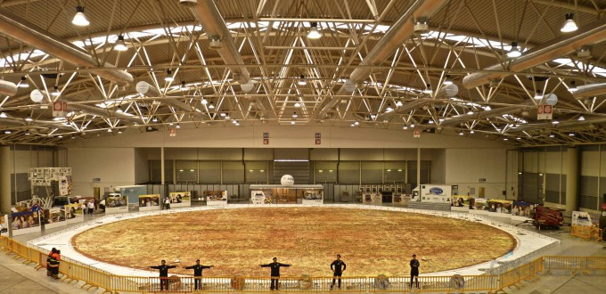

Пицца по-английски
Пицца по-английски готовится с помидорами, картофелем, сосисками, беконом, бобами и яйцами.
Такой вариант пиццы стал очень популярным завтраком в Англии. Сытно, ничего не скажешь!
пицца тарт фламбе
Самая популярная пицца во Франции — это тарт фламбе, родом из Эльзаса. Это пицца на тонкой лепёшке с
творожным сыром, беконом и луком,
политая сливочным соусом и запечённая в дровяной печи.
Грузинская пицца
Грузинская пицца или хачапури — это лепёшка с сыром, яйцами и сливочным маслом
совершенно не похожа на традиционную пиццу подавать ее,как в горячем,так и в холодном виде.
Очень необычайного вкуса получается пицца
Пицца по-японски
японская пицца с морепродуктами, сыром и без помидоров, но не это самое странное в ней. В тесто этой
пиццы добавляются чернила кальмара,
поэтому лепёшка приобретает чёрный (мало аппетитный) цвет.
пицца с кокосом
Пицца с кокосом и креветками - просто бомба
Кокос в составе пиццы — может показаться странным для нас,но не для жителей Коста-Рики.
Вторым по популярности ингредиентом пиццы в этой стране являются креветки.
для костариканцев
Пицца по-русски
Пицца по-русски: с добавлением рыбы (сардины, скумбрия, лосось),
лука или красной икры и даже с копчёной сельдью
Пицца по-русски готовится буквально мгновенно и не оставит никого равнодушным, она получается аппетитной
и вкусной.
индийская пицца
Индийская пицца — это любимая национальная еда жителей Индии.
На типичной индийской пицце мы найдём курицу тандори или баранину
с маринованным имбирём, сыром панир,Панир является отличной заменой для моцареллы
пицца из бразилии
Бразильцы очень любят зелёный горошек, поэтому его просто не могло не оказаться на их традиционной пицце.
В дополнение к нему идут морковь
свёкла, изюм и перепелиные яйца и всё это на очень тонкой лепёшке.
На сегодняшний день существует прототип принтера,
который может «напечатать» настоящую пиццу.
Изначально данный прибор изготавливался для космонавтов.
Машина “умеет” готовить немного нетрадиционную пиццу,
поскольку кетчуп заменен соусом, а рикотта — сливочным сыром.
Как утверждают специалисты, через 10 лет,
такой принтер можно будет поставить в один ряд с блендером или микроволновкой.
Предполагается, что пицца напечатанная на таком 3D принтере будет очень востребована среди
производителей данного продукта. Ведь применять
ее можно для выполнения сложных заказов, например выполнения на пицце узоров, изображений


С 1990-го года родиной самой большой в мире пиццы считали ЮАР: там была выпечена рекордная пицца
диаметром немногим более 37-ми метров. В 2012-ом году Италия вернула себе утерянный когда-то титул,
побив предыдущий рекорд.
Классическая "Маргарита", которую выпекали 5 поваров, имеет в диаметре 40 метров, а ее общая площадь
составляет 1208 кв. метров. Рекорд был зафиксирован экспертами Книги рекордов Гиннесса.
Для приготовления этого популярного итальянского блюда огромных размеров понадобилось: 8891 кг муки,
3992 кг томатной пасты, около 9-ти тонн сыра "Моцарелла", 680 кг маргарина, 249 кг соли, 190 кг
растительного масла и 22 кг бальзамического уксуса.
Вес пиццы, которую в течение двух суток выпекали из 5234 отдельных фрагментов, составил 16 тонн.
Пицце-рекордсменке дали название "Оттавия" в честь первого римского императора Августа. По словам
повара Довилио Нарди, который руководил всей командой поваров, пицца была так названа в надежде на
культурное и экономическое возрождение и из желания,
чтобы она олицетворяла собой восстановление всех стран.
Первая в мире пиццерия была открыта в итальянском городе Неаполе около 1738 года.
Любопытно то, что это заведение успешно работает и в наши дни, ежедневно привлекая за свои столики
множество любопытных и проголодавшихся туристов со всего мира.
Над заведением весит вывеска с названием Antica,
которая так и осталась неизменной с самого XVIII века.
Какие же могут быть факты о пицце без упоминания Италии? Так, в этой стране каждый год производится
более 2,5 миллиардов различных пицц, большая часть которых съедается на месте, а оставшаяся продукция
отправляется на экспорт. Несмотря на то, что пицца считается традиционным итальянским блюдом,
ожесточенные споры о происхождении этого ароматного пирога ведутся до сих пор. К примеру, норвежские
историки считают, что пиццу изобрели именно викинги во время одного из своих многочисленных походов.
Есть сведения о греческом и даже египетском происхождении этого продукта. Но, согласно общепризнанной
версии, создателем пиццы является древнеримский политический деятель Лукулл.
Самая огромная и дорогостоящая пицца в мире была создана в итальянском городе Пезаро. Многочисленные
местные повара изготовили блюдо в виде огромной широкой ленты протяженностью в 240 метров. На
изготовление и покупку ингредиентов для самой большой и дорогой пиццы в мире ушло более 50 000 евро.